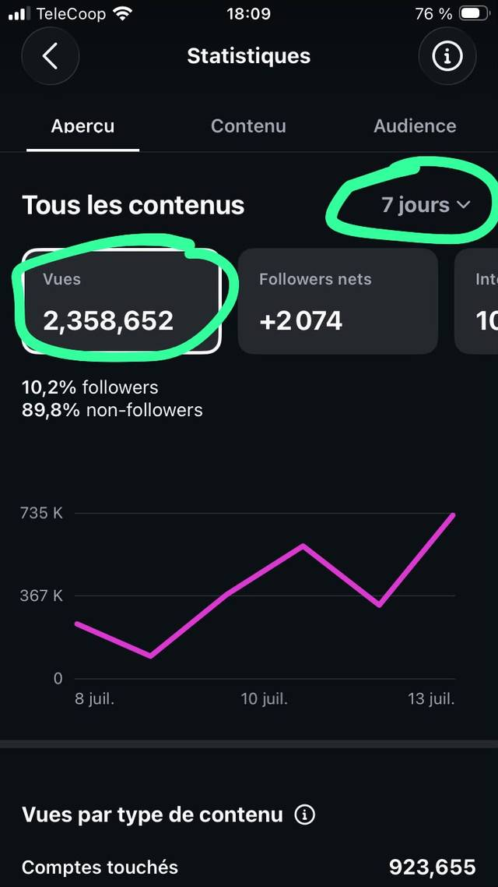
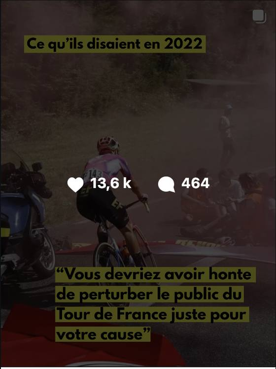
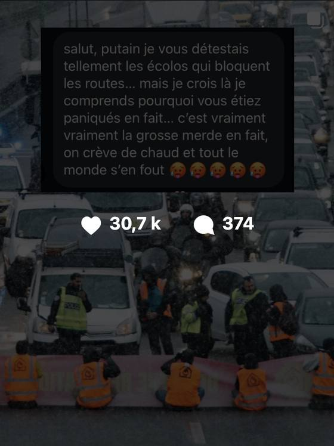
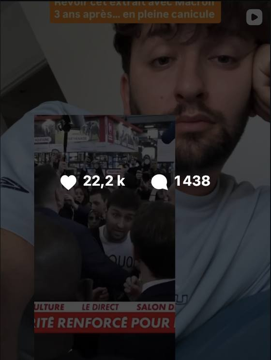
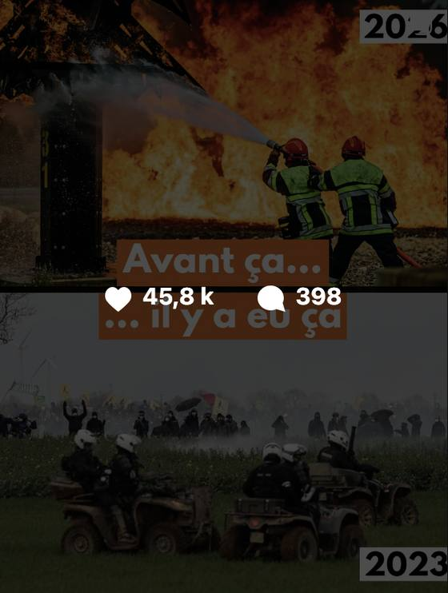

Reprise · Dernière Rénovation
Reprise du compte · réactivation éditoriale pendant la canicule de juillet 2026
Quatre ans après les actions de 2022 (dossier 04), la canicule donne raison au mouvement. Le compte, lui, dort depuis deux ans : une centaine de likes par post en moyenne, quelques pics ponctuels à quelques centaines. En le reprenant sur mon temps libre, j'ai l'intention de me greffer sur un flux d'attention important et d'y ajouter une voix : ce que l'on vit est politique, et nous aurions pu l'éviter. Pour ça, je prends cinq angles et tonalités différentes. Résultat : 2,3 millions de vues en une semaine, et plus de 3,5 millions au total. Les meilleurs scores de l'histoire du compte, seul et sans aucune action.

Statistiques du compte · 7 jours · capture back-office
2,36 millions de vues en une semaine
Statistiques du compte · 8-13 juillet 2026 · zéro sponsorisation
Le chiffre que je regarde d'abord : 89,8 % de l'audience ne suit pas le compte. La séquence est sortie de la base pour aller chercher le grand public, et elle en a ramené une partie : +2 074 abonnés et 7 033 visites de profil en une semaine.
- Point de départ
- Un compte dormant depuis deux ans, autour de 100 likes par post. Le meilleur post de la séquence en fait 45 800 : l'engagement est multiplié par plusieurs centaines.
- Conversion
- 102 k interactions sur la semaine, dont 87 k sur les publications : l'attention captée redescend vers le compte, ses contenus et ses canaux d'action.
La séquence, post par post
Cinq angles, cinq tonalités. Likes et commentaires relevés mi-juillet 2026, en progression depuis.

Angle 01 · La mémoire
« Ce qu’ils disaient en 2022 »
Le blocage du Tour de France 2022 republié pendant le Tour 2026 : la critique d’époque en hook, le réel en chute.

Angle 02 · La preuve sociale
« La canicule réveille les consciences »
Le message d’un ancien détracteur posé sur l’image même des blocages. Le retournement raconté par le public, pas par le mouvement.

Angle 03 · L’incarnation
« Revoir cet extrait avec Macron, 3 ans après… en pleine canicule »
Face caméra, la relecture du direct du Salon de l’Agriculture. Le volume de commentaires dit le débat rouvert.

Angle 04 · Le choc des images
« Avant ça… il y a eu ça »
2026 face à 2023, daté à l’écran. Le rapprochement des images fait l’argument sans commentaire. Le sommet de la séquence : 1,2 M de vues la première semaine.

Angle 05 · Le passage à l’action
« La canicule s’en va, enfin. Que faire en attendant la prochaine ? »
La sortie de séquence : convertir l’attention captée en engagement, au moment où le flux retombe.